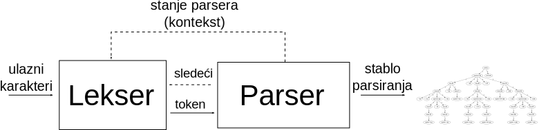
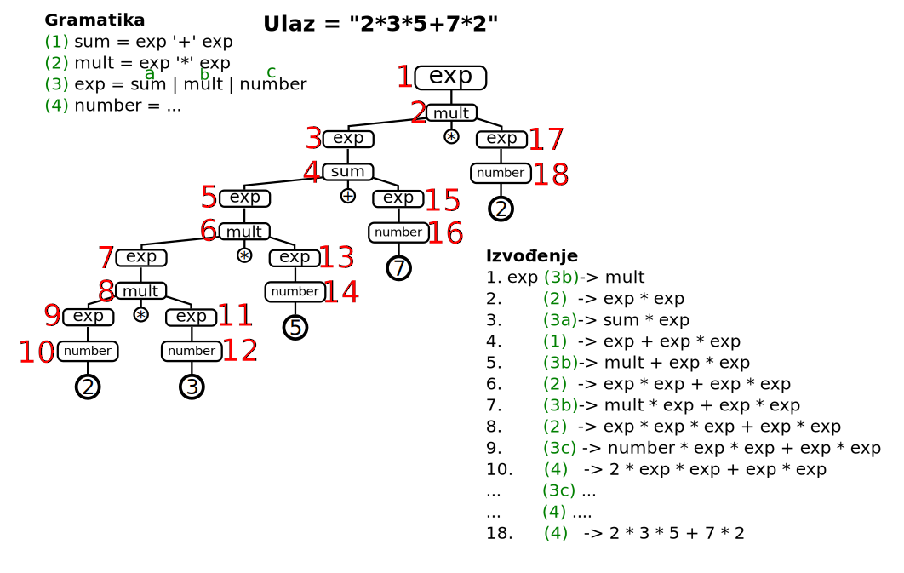
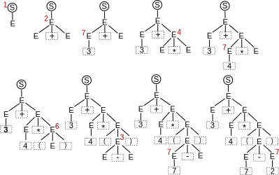
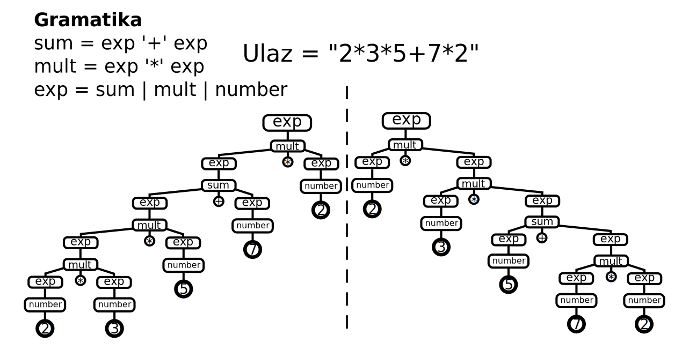
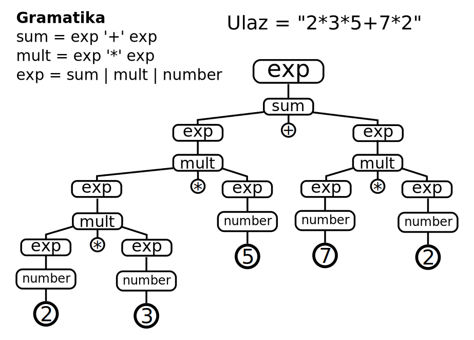
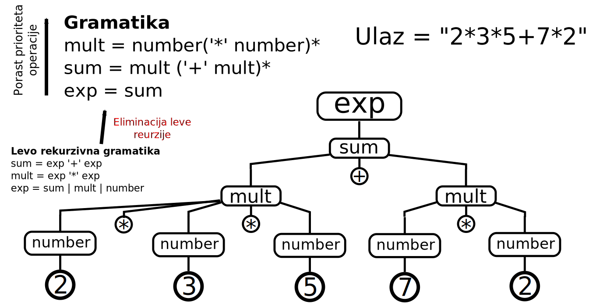

Jezici specifični za domen
Tekstualne sintakse
Prof. dr Igor Dejanović (igord at uns ac rs)
Kreirano 2024-09-30 Mon 13:42, pritisni ESC za mapu, m za meni, Ctrl+Shift+F za pretragu
Sadržaj
- 1. Uvod
- 2. Formalna gramatika
- 3. Izvođenje - derivacija (Derivation)
- 4. Strategije izvođenja
- 5. Višeznačne gramatike
- 6. Leva rekurzija
- 7. Extended Backus–Naur Form - EBNF
- 8. Strategije parsiranja
- 9. LL parser
- 10. LR parser
- 11. PEG - Parsing Expression Grammars
- 12. Pristupi u izradi parsera
- 13. Literatura
1. Uvod
1.1. Jezik
- Jezik omogućava određivanje ispravnosti rečenice.
- Svaka rečenica predstavlja sekvencu simbola.
- Jezik možemo definisati kao skup, u opštem slučaju beskonačan, svih validnih rečenica na datom jeziku.
1.2. Jezički softver (Language Software)
Osnovne klase alata:
- Generators - generišu validne rečenice na nekom jeziku.
- Recognizers - prepoznaju da li rečenica pripada jeziku.
- Parsers - prevode rečenice u stabla.
- Formatters - prevode stabla u rečenice.
1.3. Leksička analiza
- Svaki jezik poseduje alfabet mogućih karaktera koji se mogu pojaviti u sklopu validnih rečenica. Kod računarskih jezika određene kombinacije simbola se tretiraju kao jedinstveni entitet - token.
- Leksička analiza je proces grupisanja niza uzastopnih karaktera ulaznog stringa u tokene. Tekstualni blok koji odgovara tokenu naziva se još i leksema.
- Program koji vrši leksičku analizu naziva se lekser, skener ili tokenizator.
- Leksička analiza prethodi procesu parsiranja tako što se karakteri sa ulaza prvo grupišu u tokene a zatim parser vrši sintaksnu analizu i kreira stablo parsiranja.
- Skeneri mogu biti posebni alati a mogu biti integrisani u parser (scannerless parsing).
- Poznatiji skeneri: flex i lex, JLex…
1.4. Leksična analiza - primer
Posmatrajmo sledeći jednostavan iskaz:
if a > 5:
print("Veće od 5!")
Ulazni string čine karakteri ovog programskog koda: i, f, <prazno>, a, <prazno>,
>, itd. Skeniranje će grupisati pojedinačne karaktere u tokene. Svaki token ima
svoje ime (ili tip, npr. identifikator, operacija, varijabla), i vrednost (npr.
if, a, >, 5), odnosno deo ulaza koji je prepoznat kao ovaj tip tokena. Proces
tokenizacije će za ulazni string da proizvede nisku tokena koja će služiti kao
ulaz u proces parsiranja. Za primer sa prethodnog listinga izlaz skenera će
imati sledeći oblik (pod pretpostavkom da ignorišemo prazne karaktere):
[Keyword(if), Variable(a), Operator(>), IntLiteral(5),...]
1.5. Leksička analiza problemi
- Obično leksičku analizu obavljamo kao nezavisan proces što dovodi do problema.
array [1..10] of integer
- Interval
1..10se može tokenizovati kao konstanta1.tiparealiza koje sledi konstanta.10istog tipa, ili kao interval od 1 do 10. Tek ukoliko imamo kontekst u kome vršimo skeniranje možemo da razlučimo ove dve situacije. - Interakcija leksera i parsera - lexer hack). Ovakva arhitektura dovodi do komplikacija u implementaciji i održavanju alata.

- Prethodni problem je uzrokovan nepostojanjem sintaksnog konteksta ali je u nekim situacijama problem složeniji i zahteva semantičke podatke.
- Primer:
a * b
Na programskom jeziku C ovaj iskaz može da se tumači kao množenje varijabli a i
b, ali i kao deklaracija varijable b čiji je tip pokazivač na a u zavisnosti od
semantike.
1.6. Parsiranje - sintaksna analiza
- Analiza linearnog zapisa niza simbola na osnovu pravila neke formalne gramatike jezika.
- Transformacija ulaznog stringa u stablo parsiranja ili neku drugu strukturu podataka.
1.7. Stablo parsiranja
- Nastaje iz niske simbola (ulaznog stringa) procesom skeniranja (tokenizacije ili leksičke analize) i parsiranja.
- Listovi stabla su tokeni prepoznati od strane skenera (terminali) dok su unutrašnji čvorovi stabla (neterminali) definisani gramatikom jezika.
- Stablo parsiranja reflektuje sintaksnu strukturu ulaznog stringa na bazi unapred definisane formalne gramatike.
1.8. Stablo parsiranja - primer

Stablo parsiranja za ulazni string -(4-1)*5/(2+4.67)
1.9. Apstraktno sintaksno stablo
- Svaki iskaz na datom jeziku se može na apstraktan način opisati apstraktnim sintaksnim stablom (Abstract Syntax Tree).
- AST je usmereno labelirano stablo gde čvorovi stabla predstavljaju instance koncepata apstraktne sintakse.
- AST ne sadrži elemente koje ne doprinose semantici kao što su ključne reči, zagrade, “prazni” karakteri i komentari.
1.10. Primer apstraktnog sintaksnog stabla

-(4-1)*5/(2+4.67)
1.11. Razlike između apstraktnog i konkretnog sintaksnog stabla
- Konkretno sintaksno stablo je bazirano na formalnoj gramatici koja opisuje detalje zapisa u tekstualnom obliku.
- Apstraktno sintaksno stablo sadrži suštinu jezičkog iskaza.
- Možemo imati više gramatika za isti jezik odnosno jedno apstraktno sintaksno stablo možemo zapisati na više različitih načina što rezultuje različitim konkretnim sintaksnim stablima.
- Primer: Izraz
-(4-1)/5/(2+4.67)možemo u postfiksnoj notaciji (obrnuta poljska notacija) zapisati kao4 1 - 5 / 2 4.67 + / -. Ovo će rezultovati različitim stablima parsiranja ali je suština izraza ista i rezultovaće istim apstraktnim sintaksnim stablima.
1.12. Jezik
- Definicija jezika na slajdu Jezik nije preterano korisna u praktičnom smislu jer je nemoguće definisati jezik navođenjem svih validnih rečenica.
- Zato moramo imati sistem koji na konačan način omogućava definisanje potencijalno beskonačnog skupa validnih rečenica. U jezičkoj analizi jedan takav sistem je formalna gramatika.
2. Formalna gramatika
2.1. Formalna gramatika
- Predstavlja skup pravila (produkcije) pomoću kojih je moguće generisati sve validne rečenice nekog jezika (formalni jezik) polazeći od startnog simbola.
- Definiše koji od svih mogućih nizova simbola u jeziku predstavljaju validne rečenice tog jezika (ali bez validnosti njihovih značenja).
- Generisanje ispravnih rečenica jezika (generativne gramatike) - često se koriste kao osnova za prepoznavanje validnih rečenica.
2.2. Formalna gramatika - definicija
Formalna gramatika je \(G = (N, \Sigma, P, S)\) gde je:
- \(N\) - konačni skup neterminalnih simbola,
- \(\Sigma\) - konačni skup terminalnih simbola,
- \(P\) - konačni skup produkcionih pravila (produkcija) oblika: \((\Sigma \cup N)* N(\Sigma \cup N)* \rightarrow (\Sigma \cup N)*\)
- \(S\) - neterminal iz skupa \(N\) (\(S \in N)\) koga nazivamo početnim simbolom.
2.3. Notacija
- Velika slova alfabeta (\(A\), \(B\), \(C\)…) - neterminalni simboli gramatike
- Mala slova alfabeta (\(a\), \(b\), \(c\)…), cifre, oznake operatora (
+,-, …), oznake interpunkcije (zagrade, zarez, tačka…) - terminalni simboli gramatike - Velika slova kraja alfabeta (\(X\), \(Y\), \(Z\)…) - simboli gramatike, bilo neterminali ili terminali.
- Mala slova alfabeta (\(u\), \(v\), …, \(z\)) - niske terminala (moguće prazne)
- Mala grčka slova (α, β, γ…) - niske simbola gramatike (moguće prazne), moguće i terminala i neterminala.
Skup produkcija:
\(A \rightarrow \alpha_1, A \rightarrow \alpha_2, A \rightarrow \alpha_3\)
može se pisati kao:
\(A \rightarrow \alpha_1 | \alpha_2 | \alpha_3\)
Gde \(\alpha_1, \alpha_2, \alpha_3\) nazivamo alternativama produkcije \(A\).
- Pišemo \(X*\) za skup svih niski koje se mogu kreirati iz elemenata skupa \(X\).
- Praznu nisku označavamo sa \(\epsilon\).
2.4. Klasifikacija formalnih gramatika po Čomskom
Formalne gramatike se mogu klasifikovati prema hijerarhijskoj klasifikaciji Noama Čomskog1. Prema ovoj klasifikaciji gramatike mogu biti:
- tipa 0 - rekurzivno prebrojive - bez ograničenja na oblik produkcija.
- tipa 1 - kontekstno zavisne - produkcije oblika: \(\alpha A \beta \rightarrow \alpha \gamma \beta\)
- tipa 2 - kontekstno slobodne - produkcije oblika: \(A \rightarrow \gamma\)
- tipa 3 - regularne - produkcije oblika: \(A \rightarrow a | aB\)
2.5. Kontekstno slobodne gramatike (Context-Free Grammars - CFGs)
- Produkcije oblika: \(A \rightarrow \gamma\)
- Popularne u domenu računarskih jezika. Dovoljno jednostavne za konstrukciju efikasnih algoritama za parsiranje.
- Generišu jezike koje nazivamo kontekstno slobodnim jezicima.
- Postoje algoritmi za parsiranje koji prihvataju ceo skup CFG (npr. Earley, GLR). Njih nazivamo generalizovanim.
- U praksi se češće koriste jednostavniji algoritmi koji prihvataju samo podskup CFG.
- Jezik za definisanje CFG - (Extended) Backus-Naur Form (EBNF).
2.6. Primer kontekstno slobodne gramatike
G = ({S}, {a, b}, P, S)
gde je skup produkcionih pravila P dat kao:
S → a S a
S → b S b
S → ε
2.7. Jezik generisan gramatikom
Ako je \(G\) formalna gramatika tada sa \(L(G)\) obeležavamo skup svih rečenica koje \(G\) može da generiše. Ovaj skup zovemo jezikom koji \(G\) generiše ili definiše.
3. Izvođenje - derivacija (Derivation)
3.1. Izvođenje - derivacija (Derivation)
- Generisanje ispravne rečenice, počevši od startnog simbola/neterminala,
sukcesivnom primenom produkcija dok ne dobijemo rečenicu koja se sastoji samo
od terminala.
- \(S \rightarrow a S a\)
- \(S \rightarrow b S b\)
- \(S \rightarrow \epsilon\)
\(S \overset{1}{\rightarrow} aSa \overset{1}{\rightarrow} aaSaa \overset{2}{\rightarrow} aabSbaa \overset{3}{\rightarrow} aabbaa\)
3.2. Izvođenje - notacija
Korak derivacije je element oblika:
\(\gamma A \delta \Rightarrow \gamma \alpha \delta\)
gde: \(\gamma, \delta \in (N \cup T)*\)
i \(A \rightarrow \alpha\) je pravilo gramatike.
Izvođenje rečenične forme \(\tau\) iz rečenične forme \(\sigma\) je sekvenca koraka izvođenja:
\(\sigma \Rightarrow \beta_1 \Rightarrow \beta_2 \Rightarrow ... \Rightarrow \beta_{n-1} \Rightarrow \tau\)
Takođe možemo pisati i \(\sigma \overset{*}{\Rightarrow} \tau\), ukoliko imamo 0 ili više koraka, ili \(\sigma \overset{n}{\Rightarrow} \tau\) ukoliko imamo tačno \(n\) koraka, ili, ukoliko je \(n>0\) možemo pisati \(\sigma \overset{+}{\Rightarrow} \tau\).
3.3. Rečenična forma i rečenica
Bilo koja niska terminala i neterminala koja se može dobiti primenom produkcionih pravila počevši od početnog simbola naziva se rečeničnom formom (Sentential Form).
\(( x + S ) * S - S * S / ( S + S )\)
Ukoliko se rečenična forma sastoji samo od terminala onda je to rečenica (Sentence).
\(( x + y ) * x - z * y / ( x + x )\)
Odnosno možemo pisati da je rečenična forma niska \(\alpha\) za koju važi \(S \overset{*}{\Rightarrow} \alpha\). A ukoliko važi i \(\alpha \in T*\) onda je \(\alpha\) rečenica.
3.4. Primer izvođenja - algebarski izrazi
1. S → x 2. S → y 3. S → z 4. S → S + S 5. S → S - S 6. S → S * S 7. S → S / S 8. S → ( S )
S (startni simbol) → S - S (pravilo 5) → S * S - S (pravilo 6, primenjeno na levi neterminal S) → S * S - S / S (pravilo 7, primenjeno na desni neterminal S) → ( S ) * S - S / S (pravilo 8, primenjeno na levi S) → ( S ) * S - S / ( S ) (pravilo 8, primenjeno na desni S) → ( S + S ) * S - S / ( S ) (itd.) → ( S + S ) * S - S * S / ( S ) → ( S + S ) * S - S * S / ( S + S ) → ( x + S ) * S - S * S / ( S + S ) → ( x + y ) * S - S * S / ( S + S ) → ( x + y ) * x - S * y / ( S + S ) → ( x + y ) * x - S * y / ( x + S ) → ( x + y ) * x - z * y / ( x + S ) → ( x + y ) * x - z * y / ( x + x )
4. Strategije izvođenja
4.1. Odluke pri izvođenju
- U svakom koraku izvođenja parser donosi dve odluke:
- koji neterminal da zameni?,
- sa kojim pravilom da ga zameni? - ukoliko imamo više mogućnosti.
- Prva odluka je najčešće fiksna (npr. uvek se zamenjuje prvi sleva ili prvi sdesna). Ne utiče na izgled stabla.
- Za drugu odluku koriste se tehnike kao što su lookahead (videti u nastavku).
- Strategija pri donošenju druge odluke utiče na izgled stabla parsiranja.
4.2. Strategije izvođenja sa stanovišta izbora neterminala za zamenu
- Levo izvođenje - uvek se prvo razrešava levi neterminal.
- Desno izvođenje - uvek se prvo razrešava desni neterminal.
- Strategija izvođenja je bitna kod parsera koji izvršavaju određene akcije kod svake primene produkcije jer se redosled primene razlikuje iako mogu rezultovati istim stablima parsiranja.
4.3. Levo izvođenje - primer

4.4. Levo izvođenje - primer 2

\(S \xrightarrow{1} E \xrightarrow{2} E + E \xrightarrow{7} 3 + E\\ \xrightarrow{4} 3 + E * E \xrightarrow{7} 3 + 4 * E \\ \xrightarrow{6} 3 + 4 * (E) \\ \xrightarrow{3} 3 + 4 * (E - E) \\ \xrightarrow{7} 3 + 4 * (7 - E) \\ \xrightarrow{7} 3 + 4 * (7 - 2)\)
3 + 4 * (7 - 2)
5. Višeznačne gramatike
5.1. Višeznačnost (ambiguity)
- Kod kontekstno slobodnih gramatika isti neterminal može da se nađe u više produkcija na levoj strani, odnosno postoji izbor mogućih načina izvođenja neterminala.
- Ova situacija omogućava da parseri u zavisnosti od izbora produkcije koje primenjuju kao rezultat dobiju različita stabla parsiranja.
- U slučaju mogućnosti postojanja više različitih stabala parsiranja za isti ulaz kažemo da je gramatika višeznačna.
- Ovo je neminovno kod parsiranja prirodnih jezika, koji su po prirodi višeznačni, ali je loše kod programskih jezika gde je potrebno obezbediti da, ukoliko se ulaz parsira, uvek odgovara jednom stablu.
- Višeznačnost je uglavnom osobina gramatike a ne jezika.
5.2. Višeznačne gramatike - primer - dangling else
- Klasičan primer je “viseći else” (eng. dangling else).
U produkciji:
IF -> 'if' COND 'then' STMT 'else' STMT | 'if' COND 'then' STMTdefinisan je
ifiskaz nekog jezika:if stmt1 then if stmt2 then stmt3 else stmt4Ova konstrukcija može da se tumači na dva načina. Kod prvog tumačenja je
elsedeo spoljnjegifiskaza, odnosno:if stmt1 then (if stmt2 then stmt3) else stmt4dok je kod drugog tumačenja
elsedeo iskaza u sastavu unutrašnjegifiskaza, odnosno:if stmt1 then (if stmt2 then stmt3 else stmt4)- Rešenje je dodavanjem pravila prioriteta ili dodavanje konteksta kojim se
izbegava višeznačnost. Na primer, u
if-elseklauzuli može se dodati ključna rečendif.
5.3. Višeznačna gramatika - primer

5.4. A u ovom slučaju želimo
Stablo koje oslikava prioritet i asocijativnost operacija

5.5. Višeznačna gramatika - drugi primer
S → E
E → E '+' E
E → E '-' E
E → E '*' E
E → E '/' E
E → '(' E ')'
E → broj
Ulaz: \(3+4*(7-2)\)
A trebalo bi:
5.6. Razrešavanje višeznačnosti
- Često se gramatika može refaktorisati da ne bude višeznačna.
- Određeni parseri omogućavaju dodatna pravila (npr. pravilo prioriteta) koje pomaže u izboru produkcije koju treba primeniti.
- Generalizovani parseri dozvoljavaju višeznačne gramatike. Ukoliko postoje različite interpretacije ulaza biće vraćena sva moguća stabla/interpretacije.
- Pojedini parseri implicitno razrešavaju višeznačnost. Npr. rekurzivni silazni parseri (videti u nastavku) uvek pokušavaju primenu produkcija po redosledu navođenja (sleva na desno).
5.7. Razrešenje enkodovanjem prioriteta u produkcijama
Jedna od tehnika razrešavanja višeznačnosti kroz enkodovanje prioriteta i asocijativnosti operacija na nivou gramatike.
S → E E → E + T | E - T | T T → T * F | T / F | F F → ( E ) | id- Na ovom primeru vidimo da gramatička pravila za opis operacija višeg nivoa se definišu na nižem nivou sa stanovišta referenciranja.
- Na primer, pravilo
Edefiniše operacije sabiranja i oduzimanja i referencira praviloTkoje definiše operacije množenja i deljenja višeg prioriteta.
5.8. Lesička višeznačnost
- Za prethodno opisan oblik višeznačnosti kažemo da je sintaksna.
- Postoji i drugi izvor višeznačnosti koji nastaje na leksičkom nivou i nastaje kada lekser može da prepozna više tokena na istom mestu u ulaznom stringu.
Na primer:
Something: INT | FLOAT;
terminals
INT: /\d+/;
FLOAT: /\d+(\.\d+)?/;
- Problem nastaje jer terminalna pravila
INTiFLOATmogu da prepoznaju isti deo ulaza ukoliko u ulaznom broju nemamo decimalnu tačku i cifre iza nje. Ovaj problem nastaje zbog preklapanja na početnom delu definicije (\d+). - Na primer, ako je ulazni string
"3"oba pravila mogu da ga prepoznaju što znači da imamo dva moguća rešenja.
6. Leva rekurzija
6.1. Leva rekurzija
Određene vrste parsera ne smeju da imaju levo rekurzivne produkcije jer to dovodi do beskonačne rekurzije gde parser primenjuje stalno iste produkcije bez konzumiranja tokena sa ulaza.
Na primer:
\(A \rightarrow A a | \epsilon\)
Prepoznaje stringove oblika \(a*\) ali kod parsera koji ne dozvoljavaju levu rekurziju će doći do beskonačne rekurzije u pokušaju da se prepozna \(A\).
\(recognize(A) \overset{Aa}{\rightarrow} recognize(A) \ldots\)
- Mogu biti direktne i indirektne.
- Direktna leva rekurzija je produkcija oblika \(A \rightarrow A \gamma\)
- Leve rekurzije se mogu refaktorisati da koriste desno rekurzivne produkcije ali gramatika tada često gubi na intuitivnosti.
6.2. Eliminacija leve rekurzije u opštem slučaju
Pravilo \(A \rightarrow Aa | B\) postaje \(A \rightarrow Ba*\)
Primer:
\(expr \rightarrow expr \; "+" \; term \; | \; number\)
postaje:
\(expr \rightarrow number ("+" \; term)*\)
6.3. Refaktorisanje gramatike izraza
S → E
E → E '+' E
E → E '-' E
E → E '*' E
E → E '/' E
E → '(' E ')'
E → broj
S → E
E → T E'
E' → '+' T E'
E' → '-' T E'
E' → Ɛ
T → F T'
T' → '*' F T'
T' → '/' F T'
T' → Ɛ
F → ( E )
F → broj
ili kompaktnije:
S → E
E → T (('+' | '-') T)*
T → F (('*' | '/') F)*
F → '(' E ')' | broj
Refaktorisana gramatika nije ekvivalentna polaznoj jer definiše prioritet i asocijativnost operacija dok kod nerefaktorisane gramatike pored leve rekurzije imamo višeznačnost jer prioriteti i asocijativnost operatora nisu definisani.
Takođe, stabla parsiranja do kojih dolazimo upotrebom refaktorisane gramatike nisu intuitivna kao kod polazne i zahtevaju dodatni posao prilikom analize izraza.
Za ulaz 3 + 4 * ( 7 - 2 ) dobijamo stablo na desnoj strani.
A za dalju obradu daleko bi bilo pogodnije ovakvo stablo koje oslikava smisao ulaznog stringa.
7. Extended Backus–Naur Form - EBNF
- Meta-sintaksa za zapis kontekstno slobodnih gramatika.
- ISO/IEC 14977
- Produkcije dodeljuju sekvencu simbola (terminala i neterminala) neterminalima.
- U širokoj upotrebi kod parser generatora i interpretera za opis gramatike jezika.
7.1. Primer - EBNF u EBNF-u
letter = "A" | "B" | "C" | "D" | "E" | "F" | "G"
| "H" | "I" | "J" | "K" | "L" | "M" | "N"
| "O" | "P" | "Q" | "R" | "S" | "T" | "U"
| "V" | "W" | "X" | "Y" | "Z" ;
digit = "0" | "1" | "2" | "3" | "4" | "5" | "6" | "7" | "8" | "9" ;
symbol = "[" | "]" | "{" | "}" | "(" | ")" | "<" | ">"
| "'" | '"' | "=" | "|" | "." | "," | ";" ;
character = letter | digit | symbol | "_" ;
identifier = letter , { letter | digit | "_" } ;
terminal = "'" , character , { character } , "'"
| '"' , character , { character } , '"' ;
lhs = identifier ;
rhs = identifier
| terminal
| "[" , rhs , "]"
| "{" , rhs , "}"
| "(" , rhs , ")"
| rhs , "|" , rhs
| rhs , "," , rhs ;
rule = lhs , "=" , rhs , ";" ;
grammar = { rule } ;
8. Strategije parsiranja
8.1. Strategije parsiranja
- Top-down (Silazna)
- Kreće od polaznog neterminala gramatike i pokušava da generiše(izvede) ulazni string primenom produkcija s leva na desno (lhs -> rhs).
- Od opšteg ka pojedinačnom.
- Ukoliko se izabere pogrešna alternativa radi se vraćanje - backtrack.
- Ukoliko ne koriste vraćanje zovu se prediktivni parseri.
- LL parseri i rekurzivni silazni parseri (recursive descent) koriste ovu strategiju.
- LL parseri prirodno primenjuju levo izvođenje stabla parsiranja.
- Bottom-up (Uzlazna)
- Kreće od terminala i primenom produkcija s desna na levo (lhs <- rhs) pokušava da redukuje ulaz na polazni neterminal gramatike.
- Od pojedinačnog ka opštem.
- Shift-Reduce - efikasan metod uzlaznog parsiranja.
- LR parseri koriste ovu strategiju.
- LR parseri prirodno primenjuju desno izvođenje stabala parsiranja
8.2. Lookahead
- Strategija kod koje se koristi određeni broj nekonzumiranih tokena sa ulaza da bi se odlučilo o sledećim koracima kod parsiranja.
- Manji lookahead znači jednostavniji parser ali takođe i manji skup gramatika koje prihvata.
- Koliko tokena unapred koristimo najčešće piše u oznaci parsera - primer LL(1), LR(k).
- Za većinu programskih jezika potreban je samo jedan token lookahead-a - LL(1), LR(1)…
8.3. Vraćanje (backtracking)
- Strategija kod koje se u slučaju alternativnih derivacija pokušava redom sa svakom i u slučaju da parsiranje ne uspe vrši vraćanje unazad (na stanje izbora alternative) i pokušava se sa sledećom alternativom.
- Parseri koji implementiraju vraćanje često prihvataju veći skup gramatika tj. manja su ograničenja gramatika koje se prihvataju.
- Mana je što u praksi možemo imati veliki broj alternativa što često dovodi do eksponencijalnog vremena parsiranja.
- Ukoliko ne koriste vraćanje (prediktivni parseri) prihvataju manji skup gramatika.
8.4. Determinističko parsiranje
- Algoritam parsiranja kod koga se ne koristi vraćanje unazad (backtracking).
- Analogno determinističkom potisnom automatu.
- Parseri prihvataju klasu determinističkih kontekstno slobodnih jezika (podskup svih kontekstno slobodnih jezika).
- Linearno vreme parsiranja - popularni u praksi.
9. LL parser
- Top-down parser koji podržava podskup kontekstno slobodnih gramatika.
- Konzumira tokene s leva na desno i kreira levo izvođenje.
- Klasa gramatika koju podržava LL parser nazivamo LL gramatikama.
- LL(k) parser koristi k tokena unapred (lookahead) za odluku koju sledeću produkciju da primeni. Ako takav parser postoji za neku gramatiku, a da ne koristi vraćanje (backtracking) tada kažemo da je gramatika LL(k). Jezik za koji postoji LL(k) gramatika naziva se LL(k) jezik.
- LL(*) parseri nisu ograničeni na broj tokena koje mogu preuzeti sa ulaza da bi odlučili o sledećoj produkciji - dinamički se prilagođavaju.
- Veće k - moćniji ali i složeniji parser. LL(1) su naročito popularni kod računarskih jezika.
9.1. Primer LL parsiranja
Gramatika: S → E E → T + E E → T T → int
Ulaz: int + int + int
Production Input Action
---------------------------------------------------------
S int + int + int Predict S -> E
E int + int + int Predict E -> T + E
T + E int + int + int Predict T -> int
int + E int + int + int Match int
+ E + int + int Match +
E int + int Predict E -> T + E
T + E int + int Predict T -> int
int + E int + int Match int
+ E + int Match +
E int Predict E -> T
T int Predict T -> int
int int Match int
Accept
10. LR parser
- Bottom-up parser koji podržava podskup kontekstno slobodnih gramatika.
- Implementiraju Shift-Reduce strategiju i koriste tablice stanja-prelaza. Skup gramatika koje prihvata je nadskup skupa koje prihvata prediktivni LL parser.
- 1965 Donald Knuth.
- Gramatika uglavnom ne mora da se prilagođava kao kod LL parsera. Mogu se navoditi rekurzivne produkcije.
- Podvarijante: LALR (Look-Ahead), SLR (Simple), GLR (Generalized LR).
- Generatori: yacc, GNU Bison, Elkhound…
- Interpreteri: parglare
10.1. LR parsiranje - primer

10.2. GLR
- Generalized LR parser.
- Parsiranje višeznačnih gramatika.
- Efektivno radi kao LR parser ali u svakom stanju dozvoljava više prelaza čime simulira nedeterministički algoritam.
- Kod višeznačnih ulaza vraća skup stabala parsiranja (šumu parsiranja - Parse Forest).
- Na korisniku je da odredi ispravno stablo - najčešće dodatnim pravilima (npr. prioritet, asocijativnost).
- Bison u novijim verzijama može da generiše GLR parser.
- SDF parser, Elkhound, DParser, parglare.
10.3. LL - LR napomene
- Kod LL parsera problem je predvideti produkciju koju treba primeniti sledeće.
- Kod većine LR parsera (implementiranih kao SHIFT-REDUCE) problem je kada uraditi REDUCE operaciju i na koji neterminal redukovati, odnosno kada uraditi SHIFT.
- I kod jednog i kod drugog algoritma generiše se tablica koja pomaže parseru da donese odluku u toku parsiranja.
11. PEG - Parsing Expression Grammars
11.1. Rekurzivni silazni parser - Recursive descent parser
- Silazni parser izgrađen na bazi međusobno rekurzivnih procedura.
- Svaka procedura implementira jednu produkciju odnosno prepoznavanje jednog (ne)terminala.
- Kod prediktivnih parsera ne zahteva se vraćanje (backtracking).
- Ukoliko se koristi vraćanje vreme parsiranja može eksponencijalno da poraste kod složenijih gramatika.
11.2. PEG - Parsing Expression Grammars
- Formalizam za opis TDPL.
- Osnovna prednost PEG gramatika u odnosu na CFG jeste upotreba operatora uređenog izbora (eng. ordered choice) koji omogućava nedvosmislenost u parsiranju.
- Često se ovaj operator označava sa
/umesto sa|da bi se naglasila uređenost. - Ako ulazni tekst pripada jeziku koji opisuje dati PEG tada postoji samo jedno validno stablo koje ga opisuje.
- Odnosno, gramatike ne mogu biti višeznačne.
- Kod CFG postoji neodređenost jer je redosled izbora alternativa neodređen i u praktičnim primenama zavisi od korišćenog algoritma u implementaciji parsera.
- Vrsta parsera koja koristi PEG i implementirana je kao rekurzivni silazni parser sa bektrekingom i memoizacijom naziva se pakrat parser.
11.3. Packrat parser
- Rekurzivni silazni parser sa vraćanjem koji koristi tehniku memoizacije (pamćenje derivacija podstabala) da bi obezbedio linearno vreme izvršavanja.
- Prepoznaje bilo koji LL(k)/LR(k) jezik kao i mnoge jezike koji zahtevaju neograničen lookahead.
- Bolje kompozitne osobine od LL/LR parsera što ga čini pogodnim za opis proširivih dinamičkih jezika.
11.4. Refaktorisanje gramatike za PEG parsere

Kako enkodovati pravila prioriteta i eliminisati levu rekurziju?
11.5. PEG definicija
Gramatike izraza za parsiranje se sastoje od:
- konačnog skupa neterminalnih simbola \(N\),
- konačnog skupa terminalnih simbola koji je disjunktan sa \(N\), u oznaci \(\Sigma\),
- konačnog skupa pravila parsiranja \(P\),
- početnog izraza \(e_s\)
Skup terminalnih simbola (terminala) predstavlja alfabet jezika. Neterminalni simboli (neterminali) su varijable koje predstavljaju nisku sastavljenu od terminala i/ili drugih neterminala.
Pravila parsiranja su oblika \(A \leftarrow e\) gde je \(A\) neterminal a \(e\) predstavlja izraz za parsiranje. Izraz za parsiranje može biti prost i u tom slučaju može biti:
- bilo koji terminalni simbol,
- bilo koji neterminalni simbol,
- prazan string
11.6. PEG operatori
Ukoliko su \(e\), \(e_1\) i \(e_2\) izrazi za parsiranje tada se složeni izrazi za parsiranje mogu kreirati upotrebom sledećih operatora:
| \(e_1 e_2\) (sekvenca) | redom se prepoznaju izrazi \(e_1\) i \(e_2\) |
| \(e_1 / e_2\) (uređeni izbor) | prepoznaje se \(e_1\) ili \(e_2\) u navedenom redosledu |
| \(e?\) (opciono prep.) | prepoznaje se izraz \(e\) opciono |
| \(e+\) (jedan ili više) | sukcesivno se vrši prepoznavanje izraza \(e\) dok god uspeva. Izraz uspeva ako je bar jedno prepoznavanje uspešno |
| \(e*\) (nula ili više) | sukcesivno se vrši prepoznavanje izraza \(e\) dok god uspeva. Izraz uvek uspeva |
11.7. PEG - sintaksni predikati
PEG poseduje i posebnu klasu operatora – sintaksne predikate. Oni omogućavaju definisanje dodatnih informacija o kontekstu u kome se nalazi izraz koji pokušavamo da prepoznamo bez konzumiranja ulaznog stringa. Sintaksni predikati su sledeći:
- I predikat: \(\&e\) – ukoliko se na ulazu prepozna izraz \(e\) predikat ima istinitu vrednost,
- Ne predikat: \(!e\) – ukoliko se na ulazu ne prepozna izraz \(e\) predikat ima istinitu vrednost.
Sintaksni predikati omogućavaju definisanje izraza za parsiranje oblika \(e_1 \&e_2\) – biće prepoznat izraz \(e_1\) samo ukoliko iza njega sledi tekst koji se može prepoznati izrazom \(e_2\), pri čemu deo ulaznog teksta prepoznatog izrazom \(e_2\) neće biti uklonjen sa ulaza (neće biti konzumiran).
12. Pristupi u izradi parsera
- Parser generatori
- Interpreteri gramatika
12.1. Parser generatori
- Na osnovu formalne gramatike generišu programski kod parsera koji će prepoznavati rečenice na datom jeziku i pretvarati ulazne stringove u stabla parsiranja.
- Često implementiraju mehanizam za obilazak stabla parsiranja i njegovu transformaciju.
- Mogu generisati i lexer (scanner) a mogu biti i scannerless.
- Neki od poznatijih parser generatora: ANTLR, JavaCC, yacc, bison.
12.2. ANTLR
- ANTLR (ANother Tool for Language Recognition) je LL(*) parser generator implementiran na programskom jeziku Java.
- Iz opisa gramatike kreira parser kao i infrastrukturu za analizu stabla (vizitori, akcije koje se izvršavaju kada se prepozna određena konstrukcija).
12.3. Interpreteri
13. Literatura
- Igor Dejanović, Jezici specifični za domen, Fakultet tehničkih nauka, Novi Sad, 2021. (dostupno u skriptarnici FTN-a)
- Aho, Alfred V. and Lam, Monica S. and Sethi, Ravi and Ullman, Jeffrey D., Compilers: Principles, Techniques, and Tools (2nd Edition), Addison Wesley, 2006.
- Grune, Dick and Ceriel J. H., Jacobs, Parsing techniques: a practical guide, Springer-Verlag New York Inc, 2007.